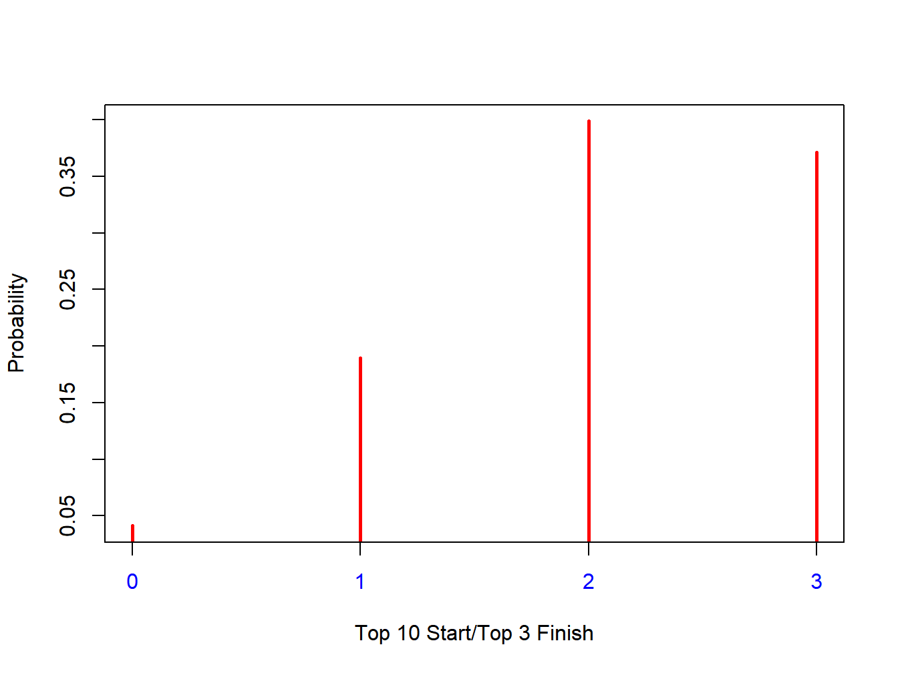
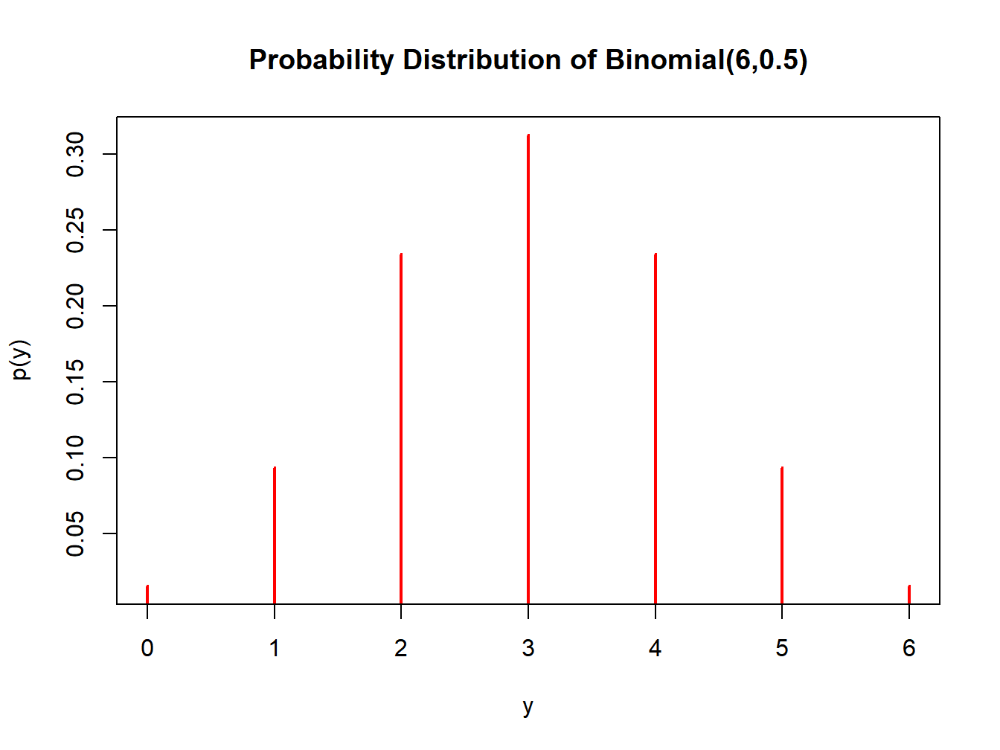
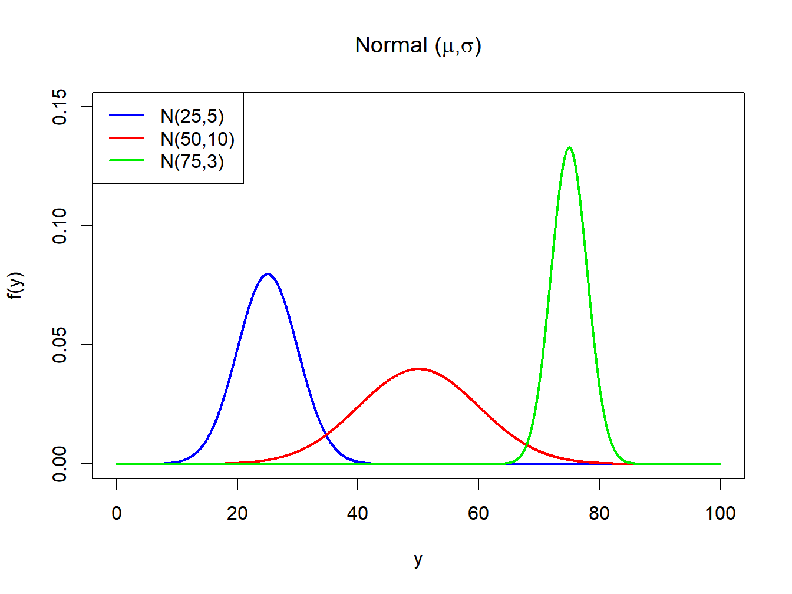
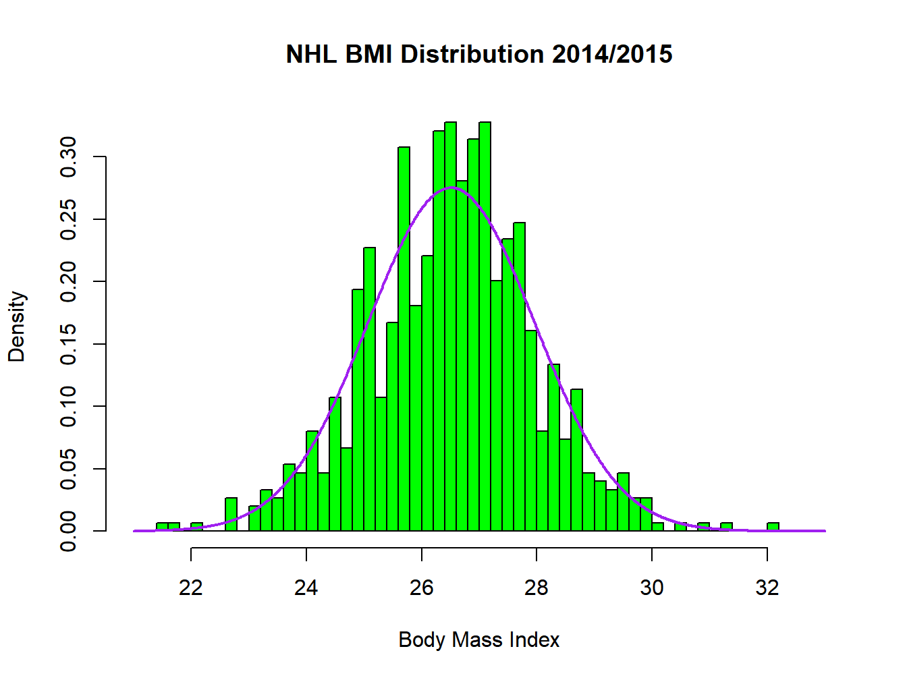
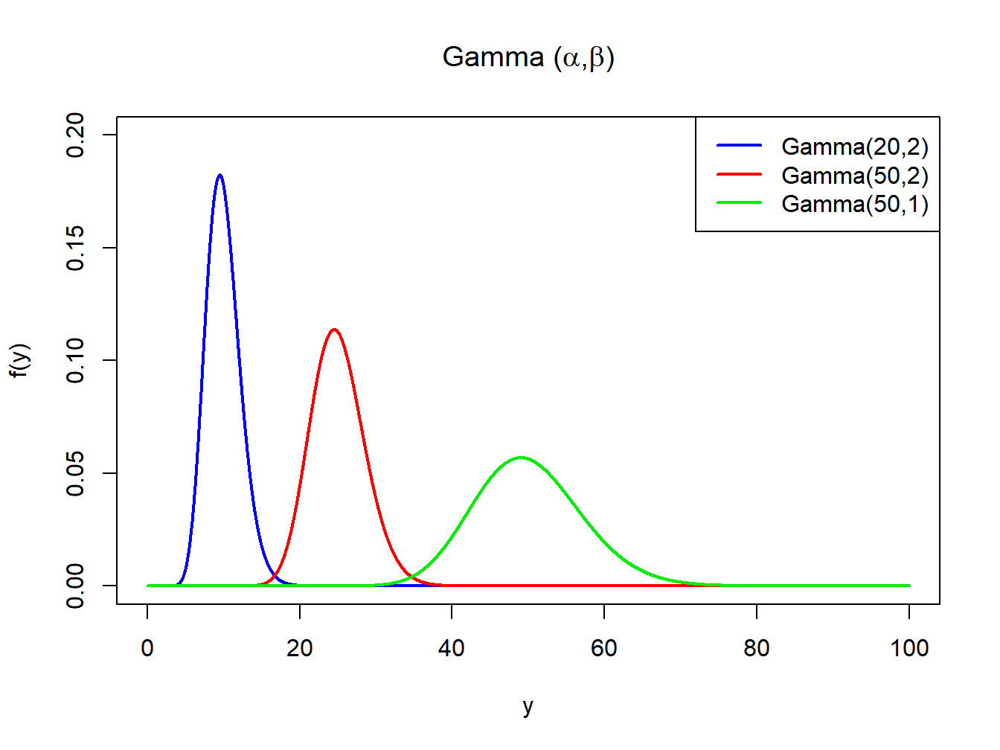
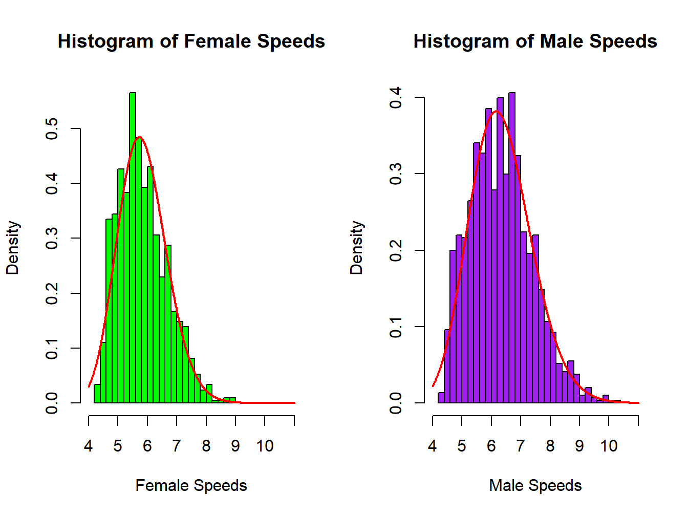
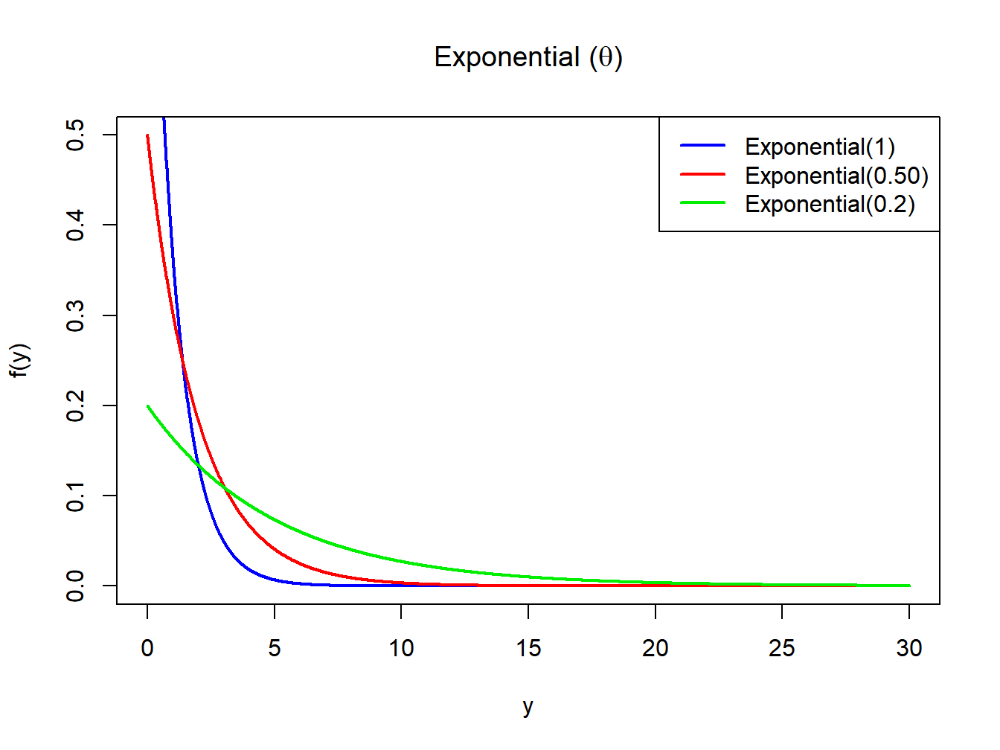
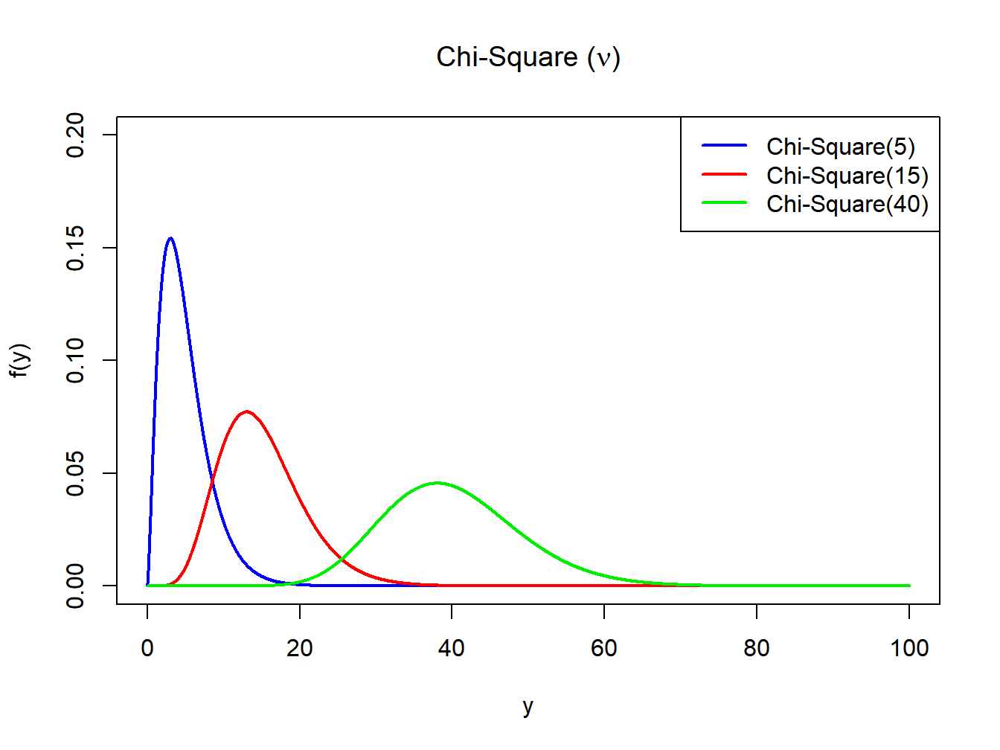
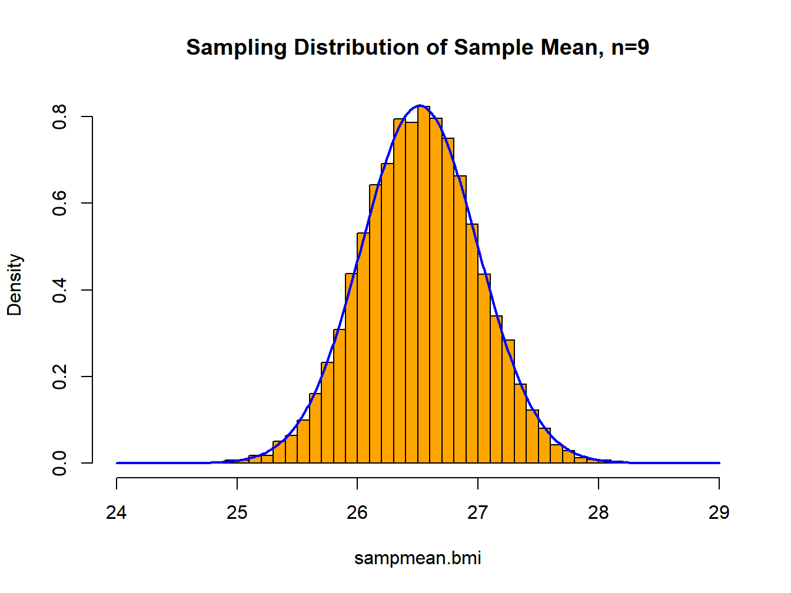
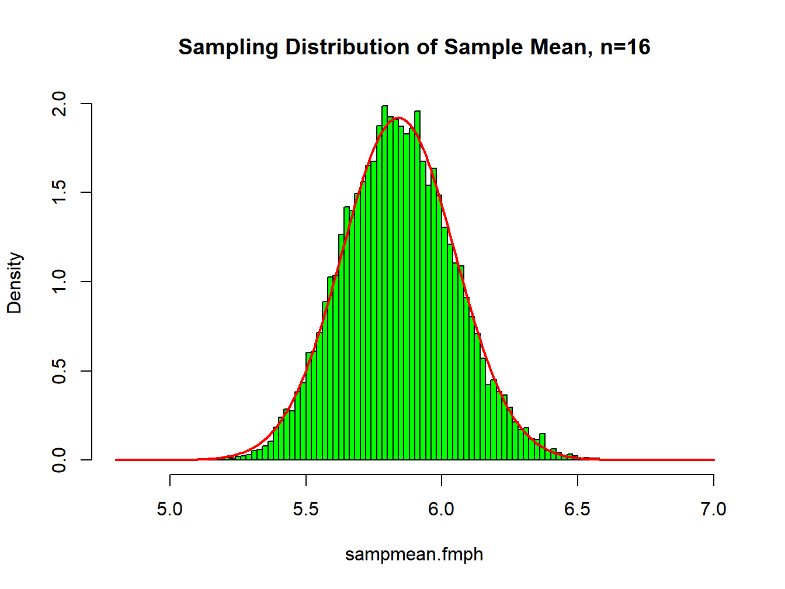

Chapter 3 Probability
In this chapter, we describe the concepts of probability, random variables, probability distributions, and sampling distributions. There are three commonly used interpretations of probability: classical, relative frequency, and subjective. Probability is the basis of all methods of statistical inference covered in this course.
3.1 Terminology and Probability Rules
The classical interpretation of probability involves listing (or using counting rules to quantify) all possible outcomes of a random process, often referred to as an “experiment.” It is often (but not necessarily) assumed that each outcome is equally likely. If a coin is tossed once, it can land either “heads” or “tails,” and unless there is reason to believe otherwise, we would assume the probability of each possible outcome is 1/2. If a dice is rolled, the possible numbers on the “up face” are \(\{1,2,3,4,5,6\}\). Again, unless some external evidence leads us to believe otherwise, we would assume each side has a probability of landing as the “up face” is 1/6. When dealing a 5 card hand from a well shuffled 52 card deck, there are \(\frac{52!}{5!(52-5)!}=2,598,960\) possible hands. Clearly that would be impossible to enumerate, but with counting rules it is still fairly easy to assign probabilities to different types of hands.
An event is a pre-specified outcome of an experiment/random process. It can be made up of a single element or a group of elements of the sample space. If the sample space is made up of \(N\) elements and the event of interest constitutes \(N_E\) elements of the sample space, the probability of the event is \(p_E = N_E/N\), when all elements are equally likely. If elements are not equally likely, \(p_E\) is the sum of the probabilities of the elements constituting the event (where the sum of all the \(N\) probabilities is 1).
The relative frequency interpretation of probability corresponds to how often an event of interest would occur if an experiment were conducted repeatedly. If an unbalanced dice were tossed a very large number of times, we could observe the fractions of times each number was the “up face.” With modern computing power, simulations can be run to approximate probabilities of complex events, which could never be able to be obtained via a model of a sample space.
In cases where a sample space can not be enumerated or an experiment can not be repeated, individuals often resort to assessing subjective
probabilities. For instance, in considering whether the price of a stock will increase over a specific time horizon, individuals may speculate on
the probability based on any market information available at the time of the assessment.
Different individuals may have different probabilities for the same event. Many studies have been conducted to assess people’s abilities and
heuristics used to assign probabilities to events, see (Daniel Kahneman, Slovic, and Tversky 1982)
for a large collection of research on the topic.
Three useful counting tools are the multiplication rule, permutations, and combinations. The multiplication rule is useful when the experiment is made up of \(k\) stages, where stage \(i\) can end in one of \(m_i\) outcomes. Permutations are used when sampling \(k\) items from \(n\) items without replacement, and order matters. Combinations are similar to permutations with the exception that order does not matter. The total possible outcomes for each of these rules is given below.
\[ \mbox{Multiplication Rule: } m_1\times m_2 \times \cdots \times m_k = \prod_{i=1}^k m_i \]
\[ \mbox{Permutations: } P_k^n = n\times (n-1) \times \cdots \times (n-k+1) = \frac{n!}{(n-k)!} \qquad 0!\equiv 1 \]
\[ \mbox{Combinations: } C_k^n = \frac{n\times (n-1) \times \cdots \times (n-k+1)}{k\times (k-1)\cdots \times 1}=\frac{n!}{k!(n-k)!} \]
Note that there are \(k!\) possible orderings of the \(k\) items selected from \(n\) items, which is why there are fewer combinations than permutations.
Example 3.1: Lotteries and Competitions
The Florida lottery has many “products” for consumers (flalottery.com). The Pick 4 game is conducted twice per day and pays out up to $5000 per drawing. Participants choose 4 digits from 0-9 (digits can be repeated). Thus at each of \(k=4\) stages, there are \(m=10\) potential digits. Thus there are 10(10)(10)(10) = 10,000 possible sequences (order matters in payouts).
In a race among 10 “identical” mice of a given strain, there are \(P_3^{10} = 10(9)(8) = 720\) possible orderings of 1st, 2nd, and 3rd place. In the 2017 Kentucky Derby, there were 22 horses in the race. Starting positions are taken by “pulling names out of a hat.” Thus, there are \(22!=1.124\times10^{21}\) possible orderings of the horses to the starting positions. This is 10.4 billion times as many people who had ever lived on the earth as of 2011 according to the Population Reference Bureau (www.prb.com).
The Florida Lotto game, held every Wednesday and Saturday night, involves selecting 6 numbers without replacement from the integers 1,…,53; where order does not matter. There are \(C_6^{53}=\frac{53!}{6!47!}=22,957,480\) possible drawings.
3.2 Basic Probability
Let \(A\) and \(B\) be events of interest with corresponding probabilities \(P(A)\) and \(P(B)\), respectively. The Union of events \(A\) and \(B\) is the event that either \(A\) and/or \(B\) occurs and is denoted \(A\cup B\). Events \(A\) and \(B\) are mutually exclusive if they can not both occur as an experimental outcome. That is, if \(A\) occurs, \(B\) cannot occur, and vice versa. The Complement of event \(A\), is the event that \(A\) does not occur and is denoted by \(\overline{A}\) or sometimes \(A'\). The Intersection of events \(A\) and \(B\) is the event that both \(A\) and \(B\) occur, and is denoted as \(A\cap B\) or simply \(AB\). In terms of probabilities, we have the following rules.
\[ \mbox{Union: }P(A\cup B) = P(A) + P(B) - P(AB) \qquad \mbox{Mutually Exclusive: } P(AB)=0 \] \[\mbox{Complement: } P\left(\overline{A}\right) = 1-P(A) \]
The probability of an event \(A\) or \(B\), without any other information, is referred to as its unconditional or marginal probability. When information is known whether or not another event has (or has not) occurred it is referred to as its conditional probability. If the unconditional probability of \(A\) and its conditional probability given \(B\) has occurred are equal, then the events \(A\) and \(B\) are said to be independent. The rules for obtaining conditional probabilities (assuming \(P(A)>0\) and \(P(B)>0\)) are given below, as well as probabilities under independence.
\[ \mbox{Prob. of A Given B: } P(A|B) = \frac{P(AB)}{P(B)} \qquad \mbox{Prob. of B Given A: } P(B|A) = \frac{P(AB)}{P(A)} \]
\[ P(AB) = P(A)P(B|A)=P(B)P(A|B) \]
\[ \mbox{$A$ and $B$ independent: } P(A) = P(A|B)=P\left(A|\overline{B}\right) \qquad P(B)= P(B|A)=P\left(B|\overline{A}\right) \qquad P(AB) = P(A)P(B) \]
Example 3.2: UFO Sightings
Based on 3646 UFO sightings on the UFO Research Database (www.uforesearchdb.com), we define \(A\) to be the event that a UFO is classified as being shaped as an orb/sphere or circular or a disk and event \(B\) that the sighting is in the USA. Table 3.1 gives a cross-tabulation of the counts for this “population.”
| \(B\) | \(\bar{B}\) | Total | |
|---|---|---|---|
| A | 909 | 67 | 976 |
| Not A | 2528 | 142 | 2670 |
| Total | 3437 | 209 | 3646 |
\[P(A)=\frac{976}{3646}=.2677 \qquad P(B) = \frac{3437}{3646} = .9427 \qquad P(AB) = \frac{909}{3646}=.2493 \] \[P(A\cup B) = .2677+.9427-.2493=.9611 \]
\[ P(A|B) = \frac{.2493}{.9427}=\frac{909}{2528}=.2645 \qquad P\left(A|\overline{B}\right)=\frac{67}{209}=.3206 \] \[P(B|A)=\frac{.2493}{.2677}= \frac{909}{976}=.9314 \qquad P(B|\overline{A})=\frac{.6934}{.7323}= \frac{2528}{2670}=.9468\]
Note that the event that a UFO is classified as orb/sphere or circular or a disk is not independent of whether it was sighted in the USA. There is a higher probability for these types of shapes to be sighted outside the USA (.3206) than in the USA (.2645).
\[ \nabla \]
Example 3.3: Women’s and Men’s Marathon Speeds
For the Rock and Roll marathon runner speeds, we can classify events as follow. Event \(F\) is that the runner is Female, event \(S_5\) is the event that a runner’s speed is less than or equal to 5 miles per hour, and \(S_7\) is the event that the runner’s speed is greater than or equal to 7 miles per hour. Counts of runners by gender and speed are given in Table 3.2. Note that the middle row represents the intersection of the compliments of events \(S_5\) and \(S_7\) and represents the runners with speeds between 5 and 7 miles per hour. We compute various probabilities below.
\[ P(F) = \frac{1045}{2499} = .4182 \qquad P\left(\overline{F}\right)=1-.4182=\frac{1454}{2499}=.5818 \qquad P(S_5)= \frac{326}{2499} = .1305 \qquad P(S_7)=\frac{464}{2499}=.1857\]
\[P\left(\overline{S_5}\cap \overline{S_7}\right)=1-.1305-.1857=\frac{1709}{2499}=.6839 \] \[P(F\cap S_5)=\frac{172}{2499}=.0688 \qquad P\left(\overline{F}\cap S_5\right)=\frac{154}{2499}=.0616\]
\[P(F\cap S_7)=\frac{106}{2499}=.0424 \qquad P\left(\overline{F}\cap S_7\right)=\frac{358}{2499}=.1433 \] \[P\left(F\cap \overline{S_5}\cap \overline{S_7} \right)=\frac{767}{2499}=.3069 \]
\[ P\left(\overline{F}\cap \overline{S_5}\cap \overline{S_7} \right)=\frac{942}{2499}=.3770 \] \[ P(S_5|F) = \frac{.0688}{.4182}=\frac{172}{1045}=.1646 \qquad P(S_7|F) = \frac{.0424}{.4182}=\frac{106}{1045}=.1014\]
\[\left(\overline{S_5}\cap \overline{S_7}|F\right)=\frac{.3069}{.4182}=\frac{767}{1045}=.7340 \]
| Counts | F | M | Total |
|---|---|---|---|
| S5(<5) | 172 | 154 | 326 |
| NotS5orS7(5-7) | 767 | 942 | 1709 |
| S7(>7) | 106 | 358 | 464 |
| Total | 1045 | 1454 | 2499 |
\[ \nabla \]
3.2.1 Bayes’ Rule
Bayes’ rule is used in a wide range of areas to update probabilities (and probability distributions) in light of new information (data). In the case of updating probabilities of particular events, we start with a set of events \(A_1,\ldots, A_k\) that represent a partition of the sample space. That means that each element in the sample space must fall in exactly one \(A_i\). In probability terms this means the following statements hold.
\[ i\neq j: \quad P\left(A_i\cap A_j\right)=0 \qquad \qquad P(A_1)+\cdots +P(A_k) = 1 \]
The probability \(P(A_i)\) is referred to as the prior probability of the \(i^{th}\) portion of the partition, and in some contexts are referred to as base rates. Let \(C\) be an event, such that \(0 < P(C) < 1\), with known conditional probabilities \(P(C|A_i)\). This leads to being able to ``update’’ the probability that \(A_i\) occurred, given knowledge that \(C\) has occurred, the posterior probability of the \(i^{th}\) portion of the partition. This is simply (in this context) an application of conditional probability making use of formulas given above and the fact that there is a partition of the sample space.
\[ P(A_i \cap C) = P(A_i)P(C|A_i) \qquad \qquad P(C) = \sum_{i=1}^k P(A_i \cap C) = \sum_{i=1}^k P(A_i)P(C|A_i) \] \[ \Rightarrow \qquad P(A_i|C) = \frac{P(A_i \cap C)}{P(C)} = \frac{P(A_i)P(C|A_i)}{\sum_{i=1}^k P(A_i)P(C|A_i)} \quad i=1,...,k \]
Example 3.4: Women’s and Men’s Marathon Speeds
Treating the three speed ranges (\(A_1\equiv \leq 5, \quad A_2 \equiv 5-7, \quad A_3 \equiv \geq 7\)) as a partition of the sample space, we can update the probabilities of the runner’s speed range, given knowledge of gender. The prior probabilities are \(P(A_1)=326/2499=.1305\), \(P(A_2)=1709/2499=.6839\), and \(P(A_3)=464/2499=.1857\). The relevant probabilities are given below to obtain the posterior probabilities of the speed ranges, given the runner’s gender.
\[ P(A_1) = \frac{326}{2499} = .1305 \qquad P(F|A_1) = \frac{172}{326}=.5276 \] \[P(A_1\cap F)=P(A_1)P(F|A_1) = \left(\frac{326}{2499}\right) \left(\frac{172}{326}\right)=.0688 \]
\[ P(A_2) = \frac{1709}{2499} = .6839 \qquad P(F|A_2) = \frac{767}{1709}=.4488 \] \[P(A_2\cap F)=P(A_2)P(F|A_2) = \left(\frac{1709}{2499}\right) \left(\frac{767}{1709}\right)=.3069 \]
\[ P(A_3) = \frac{464}{2499} = .1857 \qquad P(F|A_3) = \frac{106}{464}=.2284 \] \[P(A_3\cap F)=P(A_3)P(F|A_3) = \left(\frac{464}{2499}\right) \left(\frac{106}{464}\right)=.0424 \]
\[ P(F) = \sum_{i=1}^3 P(A_i\cap F) = .0688 + .3069 + .0424 = .4182 \] \[P(A_1|F) = \frac{.0688}{.4182}=.1646 \]
\[ P(A_2|F) = \frac{.3069}{.4182}= .7340 \qquad P(A_3|F) = \frac{.0424}{.4182}=.1014 \]
Note that these can be computed very easily from the counts in Table 3.2 by taking the cell counts over the column totals, as can be seen for the males.
\[ P(M) = \frac{1454}{2499}=.5818 \] \[P(A_1|M)=\frac{154}{1454}=.1059 \quad P(A_2|M) = \frac{942}{1454}=.6479 \quad P(A_3|M) = \frac{358}{1454}=.2462 \]
\[ \nabla \]
Example 3.5: Drug Testing Accuracy
As a second example based on assessed probabilities, (Barnum and Gleason 1964) considered drug tests among workers. They had four sources of prevalence of recreational drug users based on published data sources (2.4% (.024), 3.1% (.031), 8.2% (.082), and 20.2% (.202)). Further, based on studies of test accuracy at the time, they had the probability that a drug user (correctly) tests positive is 0.80, and the probability a non-drug user (incorrectly) tests positive is 0.02. Let \(D\) be the event that a worker is a drug user, and \(T^+\) be the event that a worker tests positive for drug use.
Consider the case where \(P(D)=.024\). We are interested in the probability a worker who tests positive is a drug user. Note that we do not have this probability stated above. The relevant probabilities and calculations are given below.
\[ P(D)=.024 \qquad P\left(\overline{D}\right)=1-.024=.976 \] \[P\left(T^+|D\right) = .80 \qquad P\left(T^+|\overline{D}\right)=.02 \]
\[ P\left(D\cap T^+\right)=.024(.80)=.01920 \qquad P\left(\overline{D}\cap T^+\right)=.976(.02)=.01952 \] \[ P\left(T^+\right)=.01920 + .01952 = .03872 \]
\[ P\left(D|T^+\right)=\frac{.01920}{.03872}=.4959 \qquad P\left(\overline{D}|T^+\right)=\frac{.01952}{.03872}=.5041 \]
Thus a positive result on the test implies slightly less than a 50:50 chance the worker uses drugs. As the prevalence increases, this probability increases, see Table 3.3.
| \(P(D)\) | \(P(DT^+)\) | \(P(\bar{D}T^+)\) | \(P(T^+)\) | \(P(D\)|\(T^+)\) |
|---|---|---|---|---|
| 0.024 | 0.0192 | 0.01952 | 0.03872 | 0.4959 |
| 0.031 | 0.0248 | 0.01938 | 0.04418 | 0.5613 |
| 0.082 | 0.0656 | 0.01836 | 0.08396 | 0.7813 |
| 0.202 | 0.1616 | 0.01596 | 0.17756 | 0.9101 |
\[ \nabla \]
3.3 Random Variables and Probability Distributions
When an experiment is conducted, or an observation is made, the outcome will not be known in advance, and is considered to be a random variable. Random variables can be qualitative or quantitative. Qualitative variables are generally modeled as a list of outcomes and their corresponding counts, as in contingency tables and cross-tabulations. Quantitative random variables are numeric outcomes and are classified as being either discrete or continuous, as described previously in describing data.
A probability distribution gives the values a random variable can take on and their corresponding probabilities (discrete case) or density (continuous case). Probability distributions can be given in tabular, graphic, or formulaic form. Some commonly used families of distributions are described below.
3.4 Discrete Random Variables
Discrete random variables can take on a finite, or countably infinite, set of outcomes. We label the random variable as \(Y\), and its specific outcomes as \(y_1, y_2,\ldots, y_k\). Note that in some cases there is no upper limit for \(k\). We denote the probabilities of the outcomes as \(P\left(Y=y_i\right)=p\left(y_i\right)\), with the following restrictions.
\[ 0 \leq p\left(y_i\right) \leq 1 \qquad \qquad \sum_{i=1}^k p\left(y_i\right) = 1 \qquad \qquad F\left(y_t\right) = P\left(Y \leq y_t\right) = \sum_{i=1}^tp\left(y_i\right) \quad t=1,\ldots ,k \]
Here \(F(y)\) is called the cumulative distribution function (cdf). This is a monotonic “step” function for discrete random variables, and ranges from 0 to 1.
Example 3.6: NASCAR Race Finish Positions - 1975-2003
For the NASCAR race data in (Winner 2006), each driver was classified by their starting position and their finishing position in the 898 races (34884 driver/races). For each race, we identify the number of racers who start in the top 10 that finish in the top 3. This random variable \((Y)\) can take on the values \(y=\) 0, 1, 2, or 3. That is, none of the people who start toward the front (top 10) finish in the top 3, or one, or two, or three. Table 3.4 gives the counts, probabilities, cumulative probabilities, and calculations used later to numerically describe the empirical population distribution. The probability of either 2 or 3 drivers who started in the top 10 finish in the top 3, is over 3/4 (.3987+.3708=.7695). A graphical depiction of the probability distribution is given in Figure 3.1.
## serRace year yearRace finish start laps prize carsRace carMake driver
## 1 1 1975 1 1 1 191 12035 35 Matador BobbyAllison
## 2 1 1975 1 2 2 191 8135 35 Mercury DavidPearson| \(y\) | races | \(p(y)\) | \(F(y)\) | \(yp(y)\) | \(y^2p(y)\) |
|---|---|---|---|---|---|
| 0 | 37 | 0.0412 | 0.0412 | 0 | 0 |
| 1 | 170 | 0.1893 | 0.2305 | 0.1893 | 0.1893 |
| 2 | 358 | 0.3987 | 0.6292 | 0.7974 | 1.5948 |
| 3 | 333 | 0.3708 | 1 | 1.1124 | 3.3372 |
| sum | 898 | 1 | NA | 2.0991 | 5.1213 |

Figure 3.1: Graphical depiction of discrete probability distribution for NASCAR race start top 10/finish top 3 results
\[ \nabla \]
3.4.1 Population Numerical Descriptive Measures
Three widely used numerical descriptive measures corresponding to a population are the population mean, \(\mu\), the population variance, \(\sigma^2\), and the population standard deviation, \(\sigma\). While we have previously covered these based on a population of measurements, we now base them on a probability distribution. Their formulas are given below.
\[ \mbox{Mean: } E\{Y\} = \mu_Y =y_1p(y_1) + \cdots + y_kp(y_k) = \sum_y yp(y) \]
\[ \mbox{Variance: } V\{Y\} = E\{(Y-\mu_Y)^2\} = \sigma_Y^2 = (y_1-\mu_Y)^2p(y_1) + \cdots + (y_k-\mu_Y)^2p(y_k) = \sum_y(y-\mu_Y)^2p(y) = \] \[ = \sum_y y^2p(y) - \mu_Y^2 \qquad \qquad \mbox{Standard Deviation: } \sigma_Y=+\sqrt{\sigma_Y^2} \]
Example 3.7: NASCAR Race Finish Positions - 1975-2003
For the NASCAR race finish data, we obtain the population mean, variance, and standard deviation from calculations in Table 3.4.
\[ E\{Y\} = \mu_Y = \sum_y yp(y) = 2.0991 \qquad V\{Y\} = \sigma_Y^2= \sum_y y^2p(y) - \mu_Y^2=5.1213-2.0991^2=0.7151 \] \[ \sigma_Y=+\sqrt{0.7151}=0.8456\]
Some useful rules among linear functions of random variables are given here. Suppose \(Y\) is a random variable with mean and variance \(\mu_Y\) and \(\sigma^2_Y\), respectively. Further, suppose that \(a\) and \(b\) are constants (not random). Then we have the following results.
\[ E\{a+bY\} = \sum_y(a+by)p(y) = a\sum_yp(y) + b\sum_y yp(y) = a(1) + b\mu_Y = a + b\mu_Y \]
\[ V\{a+bY\} = \sum_y((a+by)-(a+b\mu_Y))^2p(y) = b^2\sum_y(y-\mu_Y)^2p(y) = b^2\sigma_Y^2 \] \[\sigma_{a+bY} = |b|\sigma_Y \]
Examples where these can be applied involve transforming from inches to centimeters (1 inch = 2.54 cm, 1 cm = 1/2.54=0.3937 inch), from pounds to kilograms (1 kilogram = 2.204623 pounds) and from degrees Fahrenheit to Celsius (\(\deg F = 32 + 1.8 \deg C\)). These rules do not work for values raised to powers, exponentials, or logarithms, although some approximations exist.
Example 3.8: NHL Hockey Player BMI and Marathon Speeds
Previously, we obtained the population mean and variance for NHL player body mass indices. Now we obtain the mean, variance, and standard deviation of their weights (pounds) and heights (inches), and convert them to kilograms and centimeters, respectively. The mean weight is 202.42 pounds, and the variance is 228.60 \(\mbox{pounds}^2\). To convert from pounds to kilos, we have to divide pounds by 2.2, that is \(K=(1/2.204623)P=0.453592P\). Thus, we obtain the following quantities.
\[\mu_K=0.453592\mu_P=0.453592(202.42)=91.92 \] \[\sigma_K^2=(0.453592)^2\sigma_P^2=(0.453592)^2(228.60)=47.03 \] \[ \sigma_K=\sqrt{47.03}=6.86 \]
The population mean and variance of heights are 73.26 inches and 4.26 \(\mbox{inches}^2\), respectively. To convert inches to centimeters, we have to multiply by 2.54, that is \(C=2.54I\). Thus, we obtain the following quantities.
\[ \mu_C = 2.54\mu_I = 2.54(73.26)=186.08 \qquad \sigma_C^2=(2.54)^2\sigma_I^2=(2.54)^2(4.26)=27.48 \] \[\sigma_C=\sqrt{27.48}=5.24 \]
Note that in the metric system, the weights in kilograms are less variable than weights in pounds, while the heights in centimeters are more variable than than heights in inches.
For the female marathon runners, the mean and variance of their speeds were 5.84 mph and 0.69 \(\mbox{mph}^2\), respectively. One mile represents 1.60394 kilometers, so that so that a person who runs \(M\) miles in 1 hour, runs \(K=1.60394M\) kilometers in one hour. This leads to the following quantities.
\[ \mu_K = 1.60394(5.84) = 9.37 \qquad \sigma_K^2=(1.60394)^2(0.69)=1.78\] \[ \sigma_K=\sqrt{1.78}=1.33 \]
\[ \nabla \]
In many settings, we are interested in linear functions of a sequence of random variables: \(Y_1,\ldots,Y_n\). Typically, we have fixed coefficients \(a_1,\ldots, a_n\), and \(E\{Y_i\}=\mu_i\), \(V\{Y_i\}=\sigma_i^2\), and \(\mbox{COV}\{Y_i,Y_j\}=\sigma_{ij}\). \[ \mbox{COV}\{Y_i,Y_j\} = E\{\left(Y_i-\mu_i\right)\left(Y_j-\mu_j\right)\}=\sigma_{ij} =\rho_{ij}\sigma_i\sigma_j \]
\[ W=\sum_{i=1}^n a_iY_i \qquad E\{W\}=\mu_W = \sum_{i=1}^n a_i \mu_i\] \[V\{W\} = \sum_{i=1}^n a_i^2 \sigma_i^2 + 2\sum_{i=1}^{n-1} \sum_{j=i+1}^n a_ia_j \sigma_{ij} \]
If, as in many, but by no means all, cases, the \(Y_i\) values are independent (\(\sigma_{ij}=0\)), the variance simplifies to \(V\{W\}=\sum_{i=1}^n a_i^2 \sigma_i^2\). A special case is when we have two random variables: \(X\) and \(Y\), and a linear function \(W=aX+bY\) for fixed constants \(a\) and \(b\). We have means \(\mu_X\), \(\mu_Y\), standard deviations \(\sigma_X\), \(\sigma_Y\), covariance \(\sigma_{XY}\), and correlation \(\rho_{XY}\).
\[ W=aX+bY \qquad E\{W\}= a\mu_X + b\mu_Y \] \[ V\{W\}=a^2\sigma_X^2 + b^2\sigma_Y^2 + 2ab\sigma_{XY} = a^2\sigma_X^2 + b^2\sigma_Y^2 + 2ab\rho_{XY}\sigma_X\sigma_Y \]
Some special cases include where we have: \(a=1,b=1\) (sums), and \(a=1,b=-1\) (differences). This leads to the following results.
\[ E\{X+Y\}=\mu_X+\mu_Y \qquad \qquad V\{X+Y\} = \sigma_X^2+\sigma_Y^2 + 2\rho_{XY} \sigma_X \sigma_Y \] \[ E\{X-Y\}=\mu_X-\mu_Y \qquad \qquad V\{X-Y\} = \sigma_X^2+\sigma_Y^2 - 2\rho_{XY} \sigma_X \sigma_Y \]
Example 3.9: Movie “Close Up” Scenes
Barry Salt has classified film shots along an ordinal scale for a “population” of 398 movies.
The levels are (BCU=Big Close Up, CU=Close Up,
MCU=Medium Close Up, MLS=Medium Long Shot, LS=Long Shot, and VLS=Very Long Shot). We consider \(X\) to be the number of Big Close Up’s and \(Y\) to be the
number of Close Up’s in a film. For this population, \(\mu_X=28.84\), \(\mu_Y=79.23\), \(\sigma_X=31.48\), \(\sigma_Y=61.37\), and \(\rho_{XY}=0.51\).
We obtain the population mean, variance, and standard deviations of the sum of Big Close Up’s and Close Up’s (\(X+Y\)) and the difference between
Big Close Up’s and Close Up’s (\(X-Y\)).
\[ E\{X+Y\} = 28.84 + 79.23 = 108.07 \] \[V\{X+Y\} = 31.48^2 + 61.37^2 + 2(0.51)(31.48)(61.37) = 6727.83 \quad \sigma_{X+Y}=82.02 \]
\[ E\{X-Y\} = 28.84 - 79.23 = -50.39 \] \[V\{X-Y\} = 31.48^2 + 61.37^2 - 2(0.51)(31.48)(61.37) = 2786.70 \quad \sigma_{X-Y}=52.79\]
Source: http://www.cinemetrics.lv/salt.php
\[ \nabla \]
3.4.2 Common Families of Discrete Probability Distributions
Here we consider some commonly used families of discrete probability distributions, namely the Binomial, Poisson, and Negative Binomial families. These are used in many situations where data are counts of numbers of events occurring in an experiment.
3.4.2.1 Binomial Distribution
A binomial “experiment” is based on a series of Bernoulli trials with the following characteristics.
- The experiment consists of \(n\) trials or observations.
- Trial outcomes are independent of one another.
- Each trial can end in one of two possible outcomes, often labeled Success or Failure.
- The probability of Success, \(\pi\) is constant across all trials.
- The random variable, \(Y\), is the number of Successes in the \(n\) trials
Note that many experiments are well approximated by this model, and thus it has wide applicability. One problem that has been considered in great detail is the assumption of independence from trial to trial. A classic paper that looked at the “hot hand” in basketball shooting has led to many studies in sports involving the topic is [gilovich_1985].
The probability of any sequence of \(y\) Successes and \(n-y\) Failures is \(\pi^y (1-\pi)^{n-y}\) for \(y=0,1,\ldots ,n\). The number of ways to observe \(y\) successes in \(n\) trials makes use of combinations described previously. The number of ways of choosing \(y\) positions from \(1,2,\ldots ,n\) is \(C_y^n=\frac{n!}{y!(n-y)!}={n \choose y}\). For instance, there is only one way observing either 0 or \(n\) Successes, there are \(n\) ways of observing 1 or \(n-1\) Successes, and so on. This leads to the following probability distribution for \(Y \sim Bin(n,\pi)\).
\[ P(Y=y) =p(y)= {n \choose y} \pi^y (1-\pi)^{n-y} \quad y=0,1,\ldots ,n \qquad \sum_{y=0}^n p(y)= \left(\pi + (1-\pi)\right)^n=1^n=1 \]
Statistical packages and spreadsheets have functions for computing probabilities for the Binomial (and all distributions covered in these notes). In R, the function dbinom(\(y\),\(n\),\(\pi\)) returns \(P(Y=y)=p(y)\) (the probability “density”) when \(Y\sim Bin(n,\pi)\).
To obtain the mean and variance of the Binomial distribution, consider the \(n\) independent trials individually (these are referred to as Bernoulli trials). Let \(S_i=1\) if trial \(i\) is a success, and \(S_i=0\) if it is a failure. Then \(Y\), the number of Successes is the sum of the independent \(S_i\) values, leading to the following results.
\[E\{S_i\} = 1\pi + 0(1-\pi) = \pi \qquad E\{S_i^2\} = 1^2\pi + 0^2(1-\pi)=\pi \] \[ V\{S_i\}=E\{S_i^2\}-\left(E\{S_i\}\right)^2= \pi-\pi^2=\pi(1-\pi) \]
\[ Y=\sum_{i=1}^n S_i \quad \Rightarrow \quad E\{Y\} = \mu_Y= \sum_{i=1}^n E\{S_i\} = n\pi \] \[ V\{Y\}=\sigma_Y^2=\sum_{i=1}^n V\{S_i\} = n\pi (1-\pi) \qquad \sigma_Y=\sqrt{n\pi (1-\pi)}\]
Example 3.10: Experiments of Mobile Phone Telepathy
A set of experiments was conducted to determine whether people displayed evidence of telepathy in receiving mobile phone calls (Sheldrake, Smart, and Avraamides 2015). Each subject received 6 calls from one of two potential callers. Each subject predicted which caller was calling. Assuming random guessing, the number of successful predictions should be Binomial, with \(n=6\) trials, and probability of Success \(\pi=0.5\), since there were two potential callers. The probabilities of 0,1,2,…,6 successes for a subject in the experiment are given below. A plot of the probability distribution is given in Figure 3.2.
\[ \frac{6!}{0!(6-0)!}=\frac{6!}{6!(6-6)!}=1 \quad \frac{6!}{1!(6-1)!}=\frac{6!}{5!(6-5)!}=6 \quad \frac{6!}{2!(6-2)!}=\frac{6!}{4!(6-4)!}=15 \quad \frac{6!}{3!(6-3)!}=20 \]
\[ .5^y(1-.5)^{6-y}=.5^6=.015625 \]
\[ p(0)=p(6)=.015625 \quad p(1)=p(5)=.09375 \quad p(2)=p(4) =.234375 \quad p(3) = .3125 \]
## y p_y
## [1,] 0 0.015625
## [2,] 1 0.093750
## [3,] 2 0.234375
## [4,] 3 0.312500
## [5,] 4 0.234375
## [6,] 5 0.093750
## [7,] 6 0.015625
Figure 3.2: Binomial Distribution
The mean, variance, and standard deviation of the number of Successful predictions in the \(n=6\) trials under this model are as follow.
\[ \mu_Y=n\pi=6(0.5) = 3 \qquad \sigma_Y^2=n\pi(1-\pi) = 6(0.5)(1-0.5) = 1.5 \qquad \sigma_Y = \sqrt{1.5}=1.2247 \]
For this study, 110 subjects completed 6 trials each (660 total trials). There were a total of 369 hits (there appears to be a typo saying 370 in their Table 3). This corresponds to a proportion of 369/660=.559, in other words, these subjects in aggregate showed better than expected success in predicting callers. Table 3.5 gives the probability distributions for \(\pi=0.50\) and \(\pi=0.56\), along with expected counts under the two models and the observed counts (\(N=110\) subjects).
| \(y\) | \(p(y\)|\(\pi=.50)\) | \(p(y\)|\(\pi=.56)\) | Expected\((\pi=.50)\) | Expected\((\pi=.56)\) | Observed |
|---|---|---|---|---|---|
| 0 | 0.0156 | 0.0073 | 1.7188 | 0.7982 | 1 |
| 1 | 0.0938 | 0.0554 | 10.3125 | 6.0953 | 5 |
| 2 | 0.2344 | 0.1763 | 25.7812 | 19.3941 | 18 |
| 3 | 0.3125 | 0.2992 | 34.3750 | 32.9113 | 37 |
| 4 | 0.2344 | 0.2856 | 25.7812 | 31.4153 | 31 |
| 5 | 0.0938 | 0.1454 | 10.3125 | 15.9933 | 15 |
| 6 | 0.0156 | 0.0308 | 1.7188 | 3.3925 | 3 |
| Total | 1.0000 | 1.0000 | 110.0000 | 110.0000 | 110 |
\[ \nabla \]
3.4.2.2 Poisson Distribution
In many applications, researchers observe the counts of a random process in some fixed amount of time or space. The random variable \(Y\) is a count that can take on any non-negative integer. One important aspect of the Poisson family is that the mean and variance are the same. This is one aspect that does not work for all applications. We use the notation: \(Y \sim Poi\left(\lambda \right)\). The probability distribution, mean and variance of \(Y\) are:
\[ p(y) = \frac{e^{-\lambda} \lambda^y}{y!} \quad y=0,1,\ldots ; \quad \lambda > 0\]
\[ E\{Y\}=\mu_Y=\lambda \qquad \qquad
V\{Y\}=\sigma_Y^2 = \lambda \]
Note that \(\lambda > 0\). The Poisson arises by dividing the time/space into \(n\) “infinitely” small areas, each having either 0 or 1 Success, with Success probability \(\pi = \lambda/n\). Then \(Y\) is the number of areas having a success.
\[ p(y) = \frac{n!}{y!(n-y)!}\left(\frac{\lambda}{n}\right)^y\left(1-\frac{\lambda}{n} \right)^{n-y} = \frac{n(n-1)\cdots(n-y+1)}{y!}\left(\frac{\lambda}{n}\right)^y\left(1-\frac{\lambda}{n} \right)^{n-y} = \] \[ =\frac{1}{y!} \left(\frac{n}{n}\right)\left(\frac{n-1}{n}\right)\cdots \left(\frac{n-y+1}{n}\right)\lambda^y \left(1-\frac{\lambda}{n} \right)^{n}\left(1-\frac{\lambda}{n} \right)^{-y} \]
The limit as \(n\) goes to \(\infty\) is: \[ \lim_{n\to\infty} p(y) = \frac{1}{y!}(1)(1)\cdots(1)\lambda^y e^{-\lambda}(1) = p(y) = \frac{e^{-\lambda} \lambda^y}{y!} \quad y=0,1,2... \]
The mean and variance for the Poisson distribution are both \(\lambda\). This restriction can be problematic in many applications, and the Negative Binomial distribution (described below) is often used when the variance exceeds the mean.
Example 3.11: London Bomb Hits in World War II
A widely reported application of the Poisson Distribution involves the counts of the number of bombs hitting among 576 areas of \(0.5 km^2\) in south London during WWII (Clarke 1946), also reported in (Feller 1968). There were a total of 537 bombs hit with a mean of \(537/576=.9323\). Table 3.6 gives the counts, and their expected counts (\(576p(y)\)) for the occurrences of 0 bombs, 1 bomb, …, \(\geq5\) bombs (the last cell involves 1 area which was hit 7 times).
| \(y\) | \(p(y)\) | Expected | Observed | NA |
|---|---|---|---|---|
| 1 | 0.3670 | 211.3905 | 211 | 0.0007 |
| 2 | 0.1711 | 98.5397 | 93 | 0.3114 |
| 3 | 0.0532 | 30.6228 | 35 | 0.6257 |
| 4+ | 0.0151 | 8.7062 | 7 | 0.3344 |
| Total | 1.0000 | 576.0000 | 576 | 1.2947 |
\[ \nabla \]
3.4.2.3 Negative Binomial Distribution
The negative binomial distribution is used in two quite different contexts. The first is where a binomial type experiment is being conducted, except instead of having a fixed number of trials, the experiment is completed when the \(r^{th}\) success occurs. The random variable \(Y\) is the number of trials needed until the \(r^{th}\) success, and can take on any integer value greater than or equal to \(r\). The probability distribution, its mean and variance are given below. \[ p(y) = {y-1 \choose r-1} \pi^r \left(1-\pi \right)^{y-r} \qquad E\{Y\}= \mu_Y = \frac{r}{\pi} \] \[ V\{Y\} = \sigma_Y^2 = \frac{r\left(1-\pi\right)}{\pi^2} \]
A second use of the negative binomial distribution is as a model for count data. It arises from a mixture of Poisson models. In this setting it has 2 parameters and is more flexible than the Poisson (which has the variance equal to the mean), and can take on any non-negative integer value. In this form, the negative binomial distribution and its mean and variance can be written as follow (see e.g. (Alan Agresti 2002), Section 13.4).
\[ f\left(y;\mu,\alpha\right) =\frac{\Gamma\left(\alpha+y\right)}{\Gamma\left(\alpha\right) \Gamma\left(y+1\right)} \left(\frac{\alpha}{\alpha+\mu}\right)^{\alpha} \left(\frac{\mu}{\alpha+\mu}\right)^y \quad \Gamma(w)=\int_0^{\infty} x^{w-1} e^{-x}dx = \left(w-1\right)\Gamma\left(w-1\right) \]
\[ E\left\{Y\right\} = \mu \qquad V\left\{Y\right\} = \mu\left(1+\alpha\mu\right)\]
Example 3.12: Number of Comets Observed per Year - 1789-1888
The number of comets observed per year for the century 1789-1888 inclusive were reported by (Chambers 1889) and included in a large number of datasets by (Thorndike 1926). The annual number of comets ranged from 0 (19 years) to 9 (1 year), with frequency counts and computations for the mean and variance given in Table 3.7, treating this as a population of years. The mean and variance are given below, along with “method of moments” estimates for \(\mu\) and \(\alpha\) for the Negative Binomial distribution.
\[ \mu_Y=\sum_y yp(y)=2.58 \qquad \sigma_Y^2= \sum_y y^2p(y)-\mu_Y^2=11.36-2.58^2=4.70 \]
\[ \sigma^2 = \mu(1+\alpha\mu) \quad \Rightarrow \quad \alpha = \frac{\sigma^2/\mu -1}{\mu} = \frac{4.70/2.58-1}{2.58} = 0.32 \]
The Negative Binomial appears to fit better than a Poisson distribution with mean 2.58, based on observed and expected counts.
| \(y\) | years | \(p(y)\) | \(yp(y)\) | \(y^2p(y)\) | Exp(Poi) | Exp(NB) |
|---|---|---|---|---|---|---|
| 0 | 19 | 0.19 | 0.00 | 0.00 | 7.58 | 15.22 |
| 1 | 19 | 0.19 | 0.19 | 0.19 | 19.55 | 21.54 |
| 2 | 17 | 0.17 | 0.34 | 0.68 | 25.22 | 20.11 |
| 3 | 14 | 0.14 | 0.42 | 1.26 | 21.69 | 15.54 |
| 4 | 13 | 0.13 | 0.52 | 2.04 | 13.99 | 10.76 |
| 5 | 8 | 0.08 | 0.40 | 2.00 | 7.22 | 6.93 |
| 6 | 4 | 0.04 | 0.24 | 1.44 | 3.10 | 4.24 |
| 7 | 2 | 0.02 | 0.14 | 0.98 | 1.14 | 2.50 |
| 8 | 3 | 0.03 | 0.24 | 1.92 | 0.37 | 1.43 |
| 9+ | 1 | 0.01 | 0.09 | 0.81 | 0.14 | 1.73 |
| Total | 100 | 1.00 | 2.58 | 11.32 | 100.00 | 100.00 |
\[ \nabla \]
3.5 Continuous Random Variables
Continuous random variables can take on any values along a continuum. Their distributions are described as densities, with probabilities being assigned as areas under the curve. Unlike discrete random variables, individual points have no probability assigned to them. While discrete probabilities and means and variances make use of summation, continuous probabilities and means and variances are obtained by integration. The following rules and results are used for continuous random variables and probability distributions. We use \(f(y)\) to denote a probability density function and \(F(y)\) to dentote the cumulative distribution function.
\[ f(y) \geq 0 \qquad \int_{-\infty}^{\infty}f(y)dy=1 \qquad P(a\leq Y \leq b) = \int_a^b f(y)dy \qquad F(y) = \int_{-\infty}^y f(t)dt \]
\[ E\{Y\} = \mu_Y = \int_{-\infty}^{\infty} yf(y) dy \] \[V\{Y\}=\sigma_Y^2= \int_{-\infty}^{\infty} \left(y-\mu_Y\right)^2f(y) dy= \int_{-\infty}^{\infty} y^2f(y) dy - \mu_Y^2 \qquad \sigma_Y=+\sqrt{\sigma_Y^2} \]
3.5.1 Common Families of Continuous Probability Distributions
Three commonly applied families of distributions for describing populations of continuous measurements are the normal (Gaussian), gamma, and beta families, although there are many other families also used in practice.
The normal distribution is symmetric and mound-shaped. It has two parameters: a mean and variance (the standard deviation is often used in software packages). Many variables have distributions that are modeled well by the normal distribution, and many estimators have sampling distributions that are approximately normal. The gamma distribution has a density over positive values that is skewed to the right. There are many applications where data are skewed with a few extreme observations, such as the marathon running times observed previously. The gamma distribution also has two parameters associated with it. The beta distribution is often used to model data that are proportions (or can be extended to any finite length interval). The beta distribution also has two parameters. All of these families can take on a wide range of shapes by changing parameter values.
Probabilities, quantiles, densities, and random number generators for specific distributions and parameter values can be obtained from many statistical software packages and spreadsheets such as EXCEL. We will use R throughout these notes.
3.5.1.1 Normal (Gaussian) Distribution
The normal distributions, also known as the Gaussian distributions, are a family of symmetric mound-shaped distributions. The distribution has 2 parameters: the mean \(\mu\) and the variance \(\sigma^2\), although often it is indexed by its standard deviation \(\sigma\). We use the notation \(Y \sim N\left(\mu,\sigma\right)\). The probability density function, the mean and variance are:
\[ f(y) = \frac{1}{\sqrt{2\pi \sigma^2}} \exp\left(-\frac{\left(y-\mu\right)^2}{2\sigma^2}\right) \quad -\infty <y < \infty, -\infty < \mu < \infty, \sigma >0
\]
\[E\{Y\} = \mu_Y = \mu \quad V\{Y\}=\sigma_Y^2=\sigma^2 \]
The mean \(\mu\) defines the center (median and mode) of the distribution, and the standard deviation \(\sigma\) is a measure of the spread
(\(\mu-\sigma\) and \(\mu+\sigma\) are the inflection points). Despite the differences in location and spread of the different
distributions in the normal family, probabilities with respect to standard deviations from the mean are the same for
all normal distributions. For \(-\infty < z_1 < z_2 < \infty\), we have:
\[ P\left(\mu+z_1\sigma \leq Y \leq \mu + z_2\sigma \right) = \int_{\mu+z_1\sigma}^{\mu+z_2\sigma}
\frac{1}{\sqrt{2\pi \sigma^2}} \exp\left(-\frac{\left(y-\mu\right)^2}{2\sigma^2}\right)dy = \]
\[ = \int_{z1}^{z_2} \frac{1}{\sqrt{2\pi}}e^{-z^2/2}dz = \Phi(z_2) - \Phi(z_1) \]
Here \(Z\) is standard normal, a normal distribution with mean 0, and variance (standard deviation) 1.
\(\Phi(z^*)\) is the cumulative distribution function of the standard normal distribution, up to the point \(z^*\):
\[ \Phi(z^*) = \int_{-\infty}^{z^*} \frac{1}{\sqrt{2\pi}}e^{-z^2/2}dz \]
These probabilities and critical values can be obtained directly or indirectly from standard tables, statistical software, or spreadsheets.
Note that:
\[Y \sim N\left(\mu,\sigma\right) \qquad \Rightarrow \qquad Z=\frac{Y-\mu}{\sigma} \sim N(0,1). \]
This makes it possible to use the standard normal table to obtain probabilities and quantiles for any normal distribution.
Plots of three normal distributions are given in Figure 3.3.
Approximately 68% (.6826) of the probability lies within 1 standard deviation from the mean, 95% (.9544) lies within 2 standard deviations, and virtually all (.9970) lies within 3 standard deviations.

Figure 3.3: Three Normal Distributions
Example 3.13: NHL Player Body Mass Indices
Previously, we saw that the Body Mass Indices (BMI) of National Hockey League players for the 2013-2014 season were mound shaped with a mean
of 26.50 and standard deviation 1.45. Figure 3.4 gives a histogram along with the corresponding normal density.
There is a tendency to observe more actual BMI’s in the center than the normal distribution would imply, but the normal model seems
to be reasonable.

Figure 3.4: Body Mass Index for NHL Players 2014/2015 Season and Normal Density
Consider the following quantiles (.10, .25, .50, .75, .90) for the NHL data and the corresponding N(26.50, 1.45) distribution. Also consider the probabilities of the following ranges \((< 26.50-2(1.45)=23.60, >26.50 + 2(1.45) = 29.40\), and \((25.05=26.50-1.45,26.50+1.45=27.95))\) for the NHL data and the normal distribution. Results are given in Table 3.8 and in Table 3.9.
| 10% | 25% | 50% | 75% | 90% | |
|---|---|---|---|---|---|
| Theoretical | 24.657 | 25.537 | 26.514 | 27.491 | 28.371 |
| Empirical | 24.736 | 25.620 | 26.542 | 27.473 | 28.359 |
| \(<\mu-2\sigma\) | \((\mu-\sigma,\mu+\sigma)\) | \(>\mu+2\sigma\) | |
|---|---|---|---|
| Theoretical | 0.023 | 0.683 | 0.023 |
| Empirical | 0.025 | 0.694 | 0.027 |
The quantiles and probabilities are very similar, showing the normal model is a reasonable approximation to the distribution of NHL BMI values.
\[ \nabla \]
3.5.1.2 Gamma Distribution
The gamma family of distributions are used to model non-negative random variables that are often right-skewed. There are two widely used parameterizations. The first given here is in terms of shape and scale parameters. \[ f(y) = \frac{1}{\Gamma(\alpha)\beta^{\alpha}}y^{\alpha-1} e^{-y/\beta} \qquad y\geq 0, \alpha >0, \beta > 0 \] \[ E\{Y\}=\mu_Y = \alpha\beta \qquad V\{Y\}=\sigma_Y^2= \alpha\beta^2 \] Here, \(\Gamma(\alpha)\) is the gamma function \(\Gamma(\alpha)=\int_0^{\infty} y^{\alpha-1}e^{-y}dy\) and is built-in to virtually all statistical packages and spreadsheets. It also has two simple properties.
\[ \alpha > 1: \quad \Gamma(\alpha) = \left(\alpha-1\right)\Gamma(\alpha-1) \qquad \qquad \Gamma\left(\frac{1}{2}\right)=\sqrt{\pi} \]
Thus, if \(\alpha\) is an integer, \(\Gamma(\alpha)=\left(\alpha -1\right)!\). The second parameterization given here is in terms of shape and rate parameters.
\[ f(y) = \frac{\beta^{\alpha}}{\Gamma(\alpha)}y^{\alpha-1} e^{-y\beta} \qquad y\geq 0, \alpha >0, \beta > 0 \] \[ E\{Y\}=\mu_Y = \frac{\alpha}{\beta} \qquad V\{Y\}=\sigma_Y^2= \frac{\alpha}{\beta^2} \]
Note that different software packages use the different parameterizations in generating samples and giving tail-areas and critical values. For instance, EXCEL uses the first parameterization and R uses the second. Figure 3.5 displays three gamma densities of various shapes.

Figure 3.5: Three Gamma Distributions
Example 3.14: Rock and Roll Marathon Speeds
As seen previously, when considering females and males separately, the distributions of running speeds are all positive, and skewed to the right. The means for females and males were 5.8398 and 6.3370, respectively; and the variances were 0.6906 and 1.1187, respectively. Using the second formulation of the gamma distribution, with \(\mu = \alpha/ \beta\) and \(\sigma^2=\alpha/ \beta^2\), we obtain the following parameter values for the two distributions based on the method of moments.
\[ \frac{\mu^2}{\sigma^2}= \frac{(\alpha/\beta)^2}{\alpha/\beta^2} = \alpha \qquad \frac{\mu}{\sigma^2}=\frac{\alpha/\beta}{\alpha/\beta^2} = \beta \]
\[ \mbox{Females: } \quad \alpha_F=\frac{5.8398^2}{0.6906} = 49.38 \qquad \qquad \beta_F=\frac{5.8398}{0.6906} = 8.46 \]
\[ \mbox{Males: } \quad \alpha_M=\frac{6.3370^2}{1.1187} = 35.90 \qquad \qquad \beta_M=\frac{6.3370}{1.1187} = 5.66\]
Histograms of the actual speeds and the corresponding Gamma densities are given in Figure 3.6. Similar to what was done for the NHL BMI measurements, we compare the theoretical quantiles for the female and male speeds with the actual quantiles in Table 3.10 and compare theoretical probabilities for females and males with observed probabilities in Table 3.11. There is very good agreement between the quantiles. The extreme probabilities do not match up as well, but still show fairly good agreement, with exception of no actual cases falling more than 2 standard deviations below the means.
## Runner Gender Place Seconds mph
## 1 1 M 1830 17375 5.432374
## 2 2 F 2475 20988 4.497213
Figure 3.6: Running Velocities for Females and Males at the 2015 Rock and Roll Marathon
| 10% | 25% | 50% | 75% | 90% | |
|---|---|---|---|---|---|
| Theoretical/Female | 4.803 | 5.260 | 5.800 | 6.377 | 6.927 |
| Empirical/Female | 4.811 | 5.203 | 5.711 | 6.357 | 7.015 |
| Theoretical/Male | 5.025 | 5.595 | 6.278 | 7.015 | 7.725 |
| Empirical/Male | 4.970 | 5.561 | 6.277 | 6.986 | 7.718 |
| \(<\mu-2\sigma\) | \((\mu-\sigma,\mu+\sigma)\) | \(>\mu+2\sigma\) | |
|---|---|---|---|
| Theoretical/Female | 0.015 | 0.684 | 0.030 |
| Empirical/Female | 0.000 | 0.662 | 0.036 |
| Theoretical/Male | 0.013 | 0.685 | 0.031 |
| Empirical/Male | 0.000 | 0.665 | 0.036 |
\[ \nabla \]
Two special cases of the gamma family are the exponential family, where \(\alpha=1\) and the Chi-square family, with \(\alpha=\nu/2\) and \(\beta=2\) for integer valued \(\nu\). For the exponential family, based on the second parameterization, the symbol \(\beta\) is often replaced by \(\theta\).
\[ f(y) = \theta e^{-y\theta} \qquad E\{Y\}=\mu_Y = \frac{1}{\theta} \qquad V\{Y\}=\sigma_Y^2= \frac{1}{\theta^2} \]
Probabilities for the exponential distribution are trivial to obtain as \(F\left(y^*\right) =1-e^{-y^*\theta}\). Figure 3.7 gives three exponential distributions.

Figure 3.7: Three Exponential Distributions
For the chi-square family, based on the first parameterization, we have the following.
\[ f(y) = \frac{1}{\Gamma\left(\frac{\nu}{2}\right)2^{\nu/2}} y^{\frac{\nu}{2}-1} e^{-y/2} \qquad y>0, \nu=1,2,\ldots \] \[ E\{Y\} =\mu_Y = \nu \qquad V\{Y\}=\sigma_Y^2= 2\nu \]
Here, \(\nu\) is the degrees of freedom and we denote the distribution as: \(Y \sim \chi^2_{\nu}\). Upper and lower critical values of the chi-square distribution are available in tabular form, and in statistical packages and spreadsheets. Probabilities, quantiles, densities, and random samples can be obtained with statistical packages and spreadsheets. The chi-square distribution is widely used in statistical testing as will be seen later. Figure 3.8 gives three Chi-Square distributions.

Figure 3.8: Three Chi-Square Distributions
3.6 Sampling Distributions and the Central Limit Theorem
Sampling distributions are the probability distributions of sample statistics across different random samples from a population. That is, if we take many random samples, compute the statistic for each sample, then save that value, what would be the distribution of those saved statistics? In particular, if we are interested in the sample mean \(\overline{Y}\), or the sample proportion with a characteristic \(\hat{\pi}\), we know the following results, based on independence of elements within a random sample.
\[ \mbox{Sample Mean: } E\{Y_i\}=\mu \quad V\{Y_i\}=\sigma^2 \quad E\{\overline{Y}\}=E\left\{\sum_{i=1}^n\left(\frac{1}{n}\right)Y_i\right\} =n\left(\frac{1}{n}\right)\mu=\mu \] \[ V\{\overline{Y}\}=V\left\{\sum_{i=1}^n\left(\frac{1}{n}\right)Y_i\right\}=\sum_{i=1}^n\left(\frac{1}{n}\right)^2V\{Y_i\}= n\left(\frac{1}{n}\right)^2\sigma^2=\frac{\sigma^2}{n} \] \[ SE\{\overline{Y}\} = \sigma_{\overline{Y}}=\frac{\sigma}{\sqrt{n}} \]
\[ \mbox{Sample Proportion: } E\{Y_i\}=\pi \quad V\{Y_i\}=\pi(1-\pi) \quad E\{\hat{\pi}\}= E\left\{\sum_{i=1}^n\left(\frac{1}{n}\right)Y_i\right\} =n\left(\frac{1}{n}\right)\pi=\pi \] \[ V\{\hat{\pi}\}= V\left\{\sum_{i=1}^n\left(\frac{1}{n}\right)Y_i\right\}= \sum_{i=1}^n\left(\frac{1}{n}\right)^2V\{Y_i\}= n\left(\frac{1}{n}\right)^2 \pi(1-\pi) = \frac{\pi(1-\pi)}{n} \] \[ SE\{\hat{\pi}\} = \sigma_{\hat{\pi}}=\sqrt{\frac{\pi(1-\pi)}{n}}\]
The standard deviation of the sampling distribution of a sample statistic (aka estimator) is referred to as its standard error. Thus \(SE\{\overline{Y}\} = \sigma_{\overline{Y}}\) is the standard error of the sample mean, and \(SE\{\hat{\pi}\} = \sigma_{\hat{\pi}}\) is the standard error of the sample proportion.
When the data are normally distributed, the sampling distribution of the sample mean is also normal. When the data are not normally distributed, as the sample size increases, the sampling distribution of the sample mean or proportion tends to normality. The “rate” of convergence to normality depends on how “non-normal” the underlying distribution is. The mathematical arguments for these results are Central Limit Theorems.
\[ \mbox{Sample Mean: } \overline{Y} \stackrel{\cdot}{\sim} N\left(\mu,\frac{\sigma}{\sqrt{n}}\right) \qquad \mbox{Sample Proportion: } \hat{\pi} \stackrel{\cdot}{\sim} N\left(\pi,\sqrt{\frac{\pi(1-\pi)}{n}}\right) \]
Example 3.15: Sampling Distributions - NHL BMI, Female Marathon Speeds
We consider the sampling distributions of sample means for the NHL player Body Mass Indices, and Female Rock and Roll Marathon Speeds. For the NHL BMI data, the population mean is \(\mu=26.500\) and standard deviation is \(\sigma=1.454\). As the underlying distribution is approximately normal, the sampling distribution of the mean is approximately normal, regardless of the sample size. We take 10000 random samples of size \(n=9\), computing and saving the sample mean for each sample. The theoretical and empirical (based on the 10000 random samples) mean and standard error of the sample means are given below and a histogram with the normal density are shown in Figure 3.9.

Figure 3.9: Sample Mean Body Mass Index for NHL Players 2014/2015 Season and Normal Density
\[ \mbox{Theory: } \mu_{\overline{Y}}=\mu=26.514 \quad \sigma_{\overline{Y}} = \frac{1.450}{\sqrt{9}}=0.483 \qquad \mbox{Empirical: } \overline{\overline{y}}=26.516 \quad s_{\overline{y}} = 0.479 \]
The mean and standard deviation are very close to the corresponding theoretical values (they won’t always be this close, as sampling error exists).
For the female marathon speeds, we saw that the distribution was skewed to the right, and well modeled by a gamma distribution with mean \(\mu=5.84\) and standard deviation \(\sigma=0.83\). We take 10000 random samples of \(n=16\) from this population, computing and saving the sample mean from each sample. The theoretical and empirical (based on the 10000 random samples) mean and standard error of the sample means are given below and a histogram with the normal density are shown in Figure 3.10.

Figure 3.10: Sample Mean velocity for females in the Rock and Roll marathon
\[ \mbox{Theory: } \mu_{\overline{Y}}=\mu=5.840 \quad SE\{\overline{Y}\} = \frac{0.831}{\sqrt{16}}=0.208 \qquad \mbox{Empirical: }\overline{\overline{y}}=5.841 \quad SE\{\overline{y}\} = 0.207 \]
Again, we see very strong agreement between the empirical and theoretical values (as we should). Also, note that the sampling distribution is very well approximated by the N(5.840,0.208) in the graph.
\[ \nabla \]